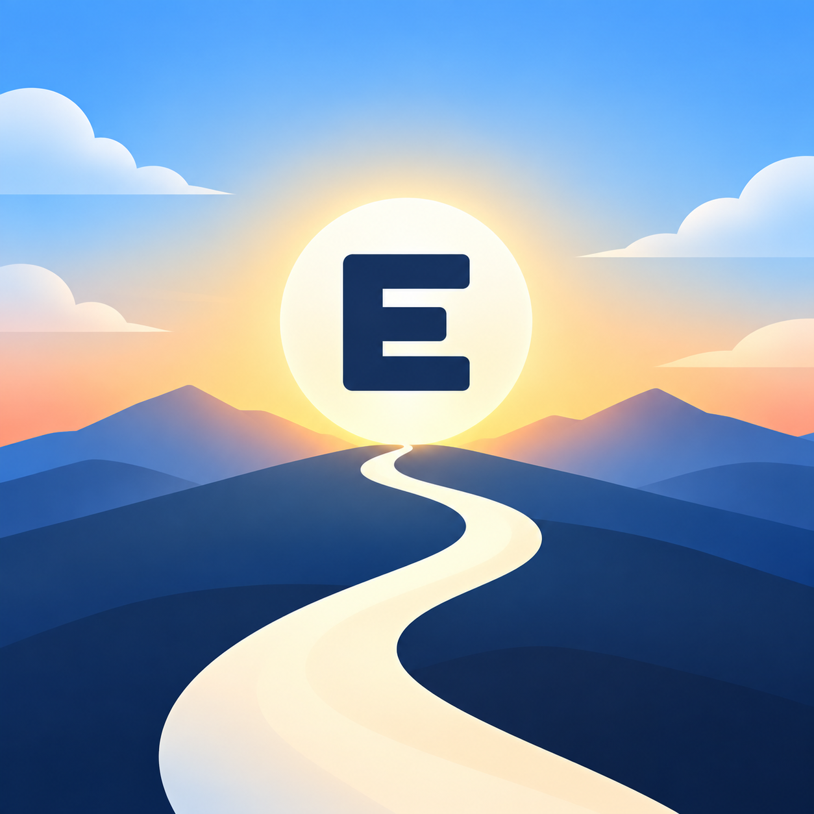
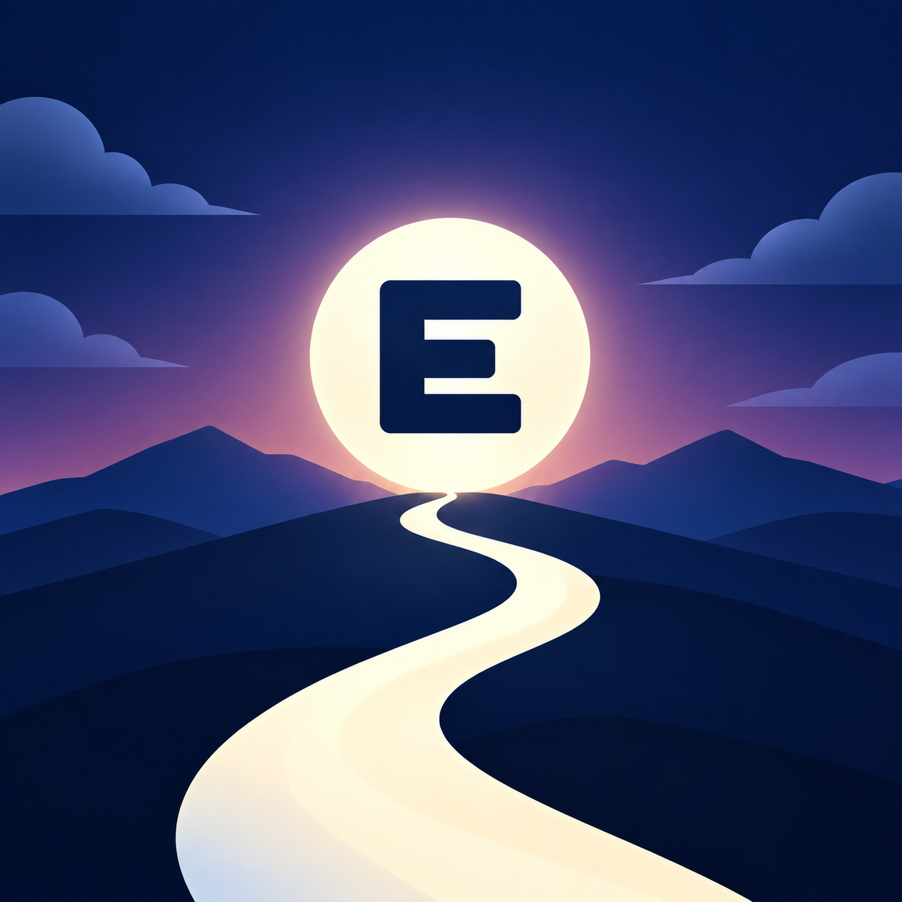
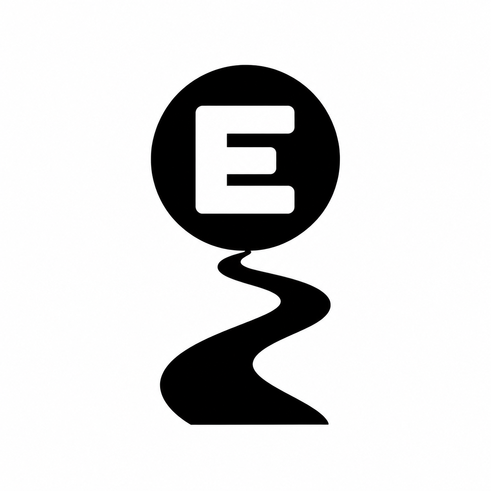

<!doctype html><html lang="ko"><meta charset="utf-8"><meta name="viewport" content="width=device-width,initial-scale=1"><title>ERoute 아이콘 시안 검토 v1</title>
<style>
*{box-sizing:border-box}body{margin:0;background:#eef2f7;color:#152b49;font:15px/1.5 -apple-system,BlinkMacSystemFont,"Apple SD Gothic Neo",sans-serif}main{max-width:1320px;margin:auto;padding:34px}h1{font-size:32px;letter-spacing:-1px;margin:0}h2{font-size:20px;margin:0 0 14px}p{margin:7px 0 18px;color:#4b6079}.tag{font-size:12px;font-weight:750;letter-spacing:1px;color:#9a4b16}header{margin-bottom:22px}.panel{background:white;border:1px solid #d9e2ed;border-radius:18px;padding:24px;margin-bottom:20px}.hero{display:grid;grid-template-columns:205px repeat(3,1fr);gap:22px;align-items:start}.label{font-size:15px;font-weight:750;margin-bottom:10px}.caption{font-size:12px;color:#5c6d83;margin-top:10px}.art{position:relative;width:var(--s);height:var(--s);flex:none;display:inline-block;overflow:hidden;vertical-align:middle;background:#fff}.art img{width:100%;height:100%;display:block}.round{border-radius:50%}.squircle{border-radius:24%}.badge{position:absolute;left:55%;top:54%;width:20%;height:20%;display:grid;place-items:center;border-radius:28%;background:#fff1ad;border:.025em solid #142a48;color:#142a48;font:900 calc(var(--s)*.155)/1 Arial,sans-serif;box-shadow:0 0 0 calc(var(--s)*.012) #142a48}.mono .badge{background:#000;color:#fff;box-shadow:0 0 0 calc(var(--s)*.012) white}.refcrop{position:relative;width:169px;height:169px;overflow:hidden;border-radius:25px;margin-bottom:8px}.refcrop img{position:absolute;max-width:none;width:1536px;height:1024px;left:-196px;top:-674px}.refcrop.night img{left:-380px}.refs{display:flex;gap:10px;flex-direction:column}.refs .refcrop{zoom:.86}.compare{display:grid;grid-template-columns:repeat(3,1fr);gap:18px}.previewcell{background:#eff3f8;border-radius:14px;padding:18px;display:flex;align-items:center;gap:22px}.previewcell.dark{background:#111e34;color:white}.previewcell .caption{margin-top:5px}.dark .caption{color:#ccd7e6}table{width:100%;border-collapse:collapse}td,th{text-align:left;border-bottom:1px solid #e8edf3;padding:10px 14px;height:83px}th{font-size:12px;color:#586b82;height:auto}td:first-child{width:180px;font-weight:650}td:not(:first-child){text-align:center}th:not(:first-child){text-align:center}.sampledark{display:inline-flex;background:#16233b;padding:7px;border-radius:9px}.footer{font-size:13px;color:#52657f}.pill{display:inline-block;background:#edf2f8;padding:4px 10px;border-radius:20px;font-size:12px}.notice{padding:12px 16px;background:#fff7df;border-radius:10px;margin-top:14px;font-size:13px}a{color:inherit}button{font:inherit}
@media(max-width:900px){main{padding:18px}.hero{grid-template-columns:repeat(2,1fr)}.compare{grid-template-columns:1fr}.panel{overflow-x:auto}.refs{flex-direction:row}.art{max-width:100%}}
</style><main><header><div class="tag">DESIGN REVIEW · 01 여정형 · 미승인 시안</div><h1>같은 길, 같은 목적지. 낮과 밤의 ERoute.</h1><p>원안의 길·산·지평선을 새로 그렸습니다. 붉은 십자 → 남색 E는 사용자 확인이 필요한 심벌 변경 제안입니다.</p></header>
<section class="panel"><h2>01 원안과 새 원본</h2><div class="hero"><div><div class="label">원안 · 참고용 발췌</div><div class="refs"><div class="refcrop"></div><div class="refcrop night"></div></div><div class="caption">기존 보드의 01 여정형.<br>참고 칸은 원래 크기 이하로 표시.<br>새 자산으로 사용하지 않았습니다.</div></div><div><div class="label">Light · 일반</div><a href="eroute-e-light-candidate-v1.png"><span class="art  light" style="--s:260px"></span></a><div class="caption">새로 제작한 고해상도 래스터 원본<br>클릭하면 원본 크기로 확인</div></div><div><div class="label">Dark · 일반</div><a href="eroute-e-dark-candidate-v1.png"><span class="art  dark" style="--s:260px"></span></a><div class="caption">새로 제작한 고해상도 래스터 원본<br>클릭하면 원본 크기로 확인</div></div><div><div class="label">단색 · 일반</div><a href="eroute-e-mono-candidate-v1.png"><span class="art  mono" style="--s:260px"></span></a><div class="caption">새로 제작한 고해상도 래스터 원본<br>클릭하면 원본 크기로 확인</div></div></div><div class="notice">추천: E 심벌 + 길·지평선 유지. 컬러 Light/Dark는 같은 구도. 단색은 E와 길의 실루엣으로 단순화했습니다.</div></section>
<section class="panel"><h2>02 Preview 구분 · 같은 원본 + P 배지</h2><div class="compare"><div class="previewcell light"><span class="art squircle light" style="--s:104px"><span class="badge">P</span></span><div><b>Light Preview</b><div class="caption">P 배지로 형태 구분</div></div></div><div class="previewcell dark"><span class="art squircle dark" style="--s:104px"><span class="badge">P</span></span><div><b>Dark Preview</b><div class="caption">P 배지로 형태 구분</div></div></div><div class="previewcell mono"><span class="art squircle mono" style="--s:104px"><span class="badge">P</span></span><div><b>단색 Preview</b><div class="caption">P 배지로 형태 구분</div></div></div></div><div class="caption">P를 중심 안전 영역 안에 배치하는 구분안입니다. 배지는 비교 페이지의 공통 레이어이며 플랫폼 자산에 아직 반영하지 않았습니다.</div></section>
<section class="panel"><h2>03 실제 표시 크기 · 마스크 비교</h2><table><thead><tr><th>시안</th><th>24 px</th><th>32 px</th><th>48 px</th><th>64 px</th><th>원형 · 64 px</th><th>둥근 사각형 · 64 px</th><th>어두운 배경 · 48 px</th></tr></thead><tbody><tr><td>Light 일반</td><td><span class="art  light" style="--s:24px"></span></td><td><span class="art  light" style="--s:32px"></span></td><td><span class="art  light" style="--s:48px"></span></td><td><span class="art  light" style="--s:64px"></span></td><td><span class="art round light" style="--s:64px"></span></td><td><span class="art squircle light" style="--s:64px"></span></td><td><span class="sampledark"><span class="art round light" style="--s:48px"></span></span></td></tr><tr><td>Dark 일반</td><td><span class="art  dark" style="--s:24px"></span></td><td><span class="art  dark" style="--s:32px"></span></td><td><span class="art  dark" style="--s:48px"></span></td><td><span class="art  dark" style="--s:64px"></span></td><td><span class="art round dark" style="--s:64px"></span></td><td><span class="art squircle dark" style="--s:64px"></span></td><td><span class="sampledark"><span class="art round dark" style="--s:48px"></span></span></td></tr><tr><td>단색 일반</td><td><span class="art  mono" style="--s:24px"></span></td><td><span class="art  mono" style="--s:32px"></span></td><td><span class="art  mono" style="--s:48px"></span></td><td><span class="art  mono" style="--s:64px"></span></td><td><span class="art round mono" style="--s:64px"></span></td><td><span class="art squircle mono" style="--s:64px"></span></td><td><span class="sampledark"><span class="art round mono" style="--s:48px"></span></span></td></tr><tr><td>Light Preview</td><td><span class="art  light" style="--s:24px"><span class="badge">P</span></span></td><td><span class="art  light" style="--s:32px"><span class="badge">P</span></span></td><td><span class="art  light" style="--s:48px"><span class="badge">P</span></span></td><td><span class="art  light" style="--s:64px"><span class="badge">P</span></span></td><td><span class="art round light" style="--s:64px"><span class="badge">P</span></span></td><td><span class="art squircle light" style="--s:64px"><span class="badge">P</span></span></td><td><span class="sampledark"><span class="art round light" style="--s:48px"><span class="badge">P</span></span></span></td></tr><tr><td>Dark Preview</td><td><span class="art  dark" style="--s:24px"><span class="badge">P</span></span></td><td><span class="art  dark" style="--s:32px"><span class="badge">P</span></span></td><td><span class="art  dark" style="--s:48px"><span class="badge">P</span></span></td><td><span class="art  dark" style="--s:64px"><span class="badge">P</span></span></td><td><span class="art round dark" style="--s:64px"><span class="badge">P</span></span></td><td><span class="art squircle dark" style="--s:64px"><span class="badge">P</span></span></td><td><span class="sampledark"><span class="art round dark" style="--s:48px"><span class="badge">P</span></span></span></td></tr><tr><td>단색 Preview</td><td><span class="art  mono" style="--s:24px"><span class="badge">P</span></span></td><td><span class="art  mono" style="--s:32px"><span class="badge">P</span></span></td><td><span class="art  mono" style="--s:48px"><span class="badge">P</span></span></td><td><span class="art  mono" style="--s:64px"><span class="badge">P</span></span></td><td><span class="art round mono" style="--s:64px"><span class="badge">P</span></span></td><td><span class="art squircle mono" style="--s:64px"><span class="badge">P</span></span></td><td><span class="sampledark"><span class="art round mono" style="--s:48px"><span class="badge">P</span></span></span></td></tr></tbody></table><div class="caption">브라우저 배율 100%의 CSS 픽셀 기준. 시각 검수 크기이며 Android/iOS 납품 규격이나 실제 홈 화면 캡처가 아닙니다.</div></section>
<footer class="footer"><b>적용 범위:</b> Android는 기본 컬러 + 공식 단색 테마 아이콘. Day/Night 풍경 자동 교체를 뜻하지 않습니다.<br>iOS는 자산·설정 준비와 빌드·기기 검증을 구분합니다. 앱 리소스·설치본·세션·설정 변경 없음.<br><b>선택:</b> E 변경안 승인 / 원안 십자 유지 요청 / 구도·심벌·P 배지 수정 요청. 디자인 승인 뒤에만 플랫폼 적용을 시작합니다.</footer></main></html>
